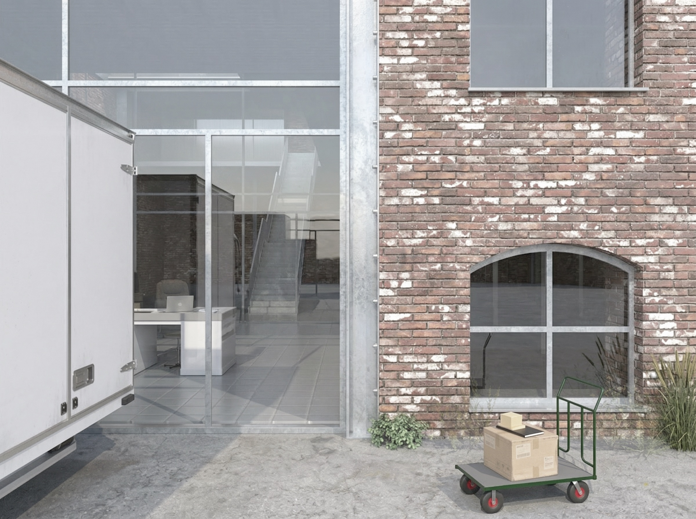

AARON AMEND




Aaron Amend is an architect based in Paris, currently collaborating with Plan Comùn. Previously he has worked at Nicolas Dorval-Bory Architectes in Paris, Bangkok Tokyo Architecture in Bangkok, and tiburg Architekten in Vienna.
He completed his Master of Architecture at the École Nationale Supérieure d'Architecture de Paris-Belleville, with a semester at the NTUT Taipei, after graduating with a Bachelor of Architecture from Bauhaus-Universität Weimar and an exchange semester at the TU Vienna.
Supervised by Julie Lafortune, Etienne Barré and Julie Maillard. In collaboration with Diego Kühle Ramos. Grade: A (with congratulations from the jury).
The thesis examines rapid densification on public space in disadvantaged neighbourhoods. An infrastructural element that weaves the new neighbourhood into the existing urban fabric and creates a place for making and experiencing music.
Supervised by Prof. Verena von Beckerath and Till Hoffmann.
Two barns opposite each other were transformed: one for living with shared kitchens on two floors, one dedicated to concentrated work, usable as studio, home office, or event space.
Supervised by Prof. Louis Burriel. With Diego Kühle Ramos.
Developing a consistent system of tools and parameters to organize interventions and evaluate their consequences on the former Roubaix factory.
Supervised by Prof. Verena von Beckerath. With Charlotte Henschel and Vincent Mank.
Reusing the existing structure of a Hamburg parking garage to generate new cooperative living space with three apartment typologies and hybrid office/communal areas.
Competition work including Python (rehabilitation of 3 residential towers on the eastern Périphérique in collaboration with NP2F), Hebert Lot C, Pantin St. Denis 2, and a full apartment renovation for a retiring couple in Paris 10ème.
A seminary and church complex embedded in the landscape of the forest near Wittenberg. The project explores the relationship between sacred space, education, and nature.
A cider press and production facility sited along the Thuringia cycle path, connecting agricultural landscape with passing cyclists and visitors.
Selected work from internships at Nicolas Dorval-Bory Architects (Paris), Bangkok Tokyo Architects (Bangkok), tiburg Architekten (Vienna) — and competition entries.